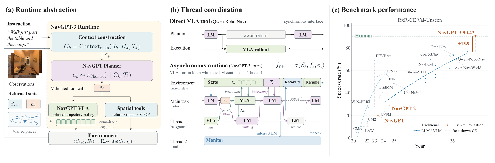
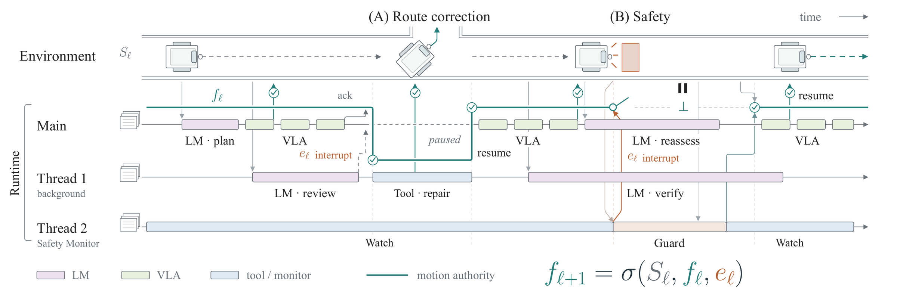
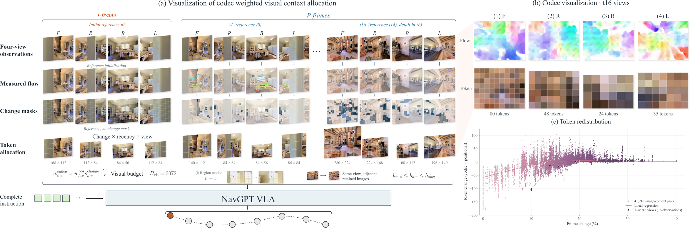

NavGPT-3 详细解读与宇树 G1-D 部署方案
NavGPT-3: Harnessing Context in a Hierarchical Navigation Runtime（arXiv:2610.10787，v2 2026-10-12）
1. 一页纸总结
NavGPT-3 是一个“大模型规划 + 导航 VLA 执行”的分层视觉语言导航系统。上层 Planner 是前沿大模型（GPT-6 Astra 或 Claude Opus 5），通过一个称为 harness 的接口调用观测、地图、回退等空间工具，或把一段导航指令委托给下层 8B 的 NavGPT VLA 去高频执行；VLA 每步根据指令和视觉历史预测 8 个局部航点。harness 之上还有一个类操作系统的 runtime，把推理、执行、监控作为线程调度，并决定哪个线程拥有“让机器人动”的权限，从而实现中断和安全急停。
(vx, vyaw)；
③ G1-D 机载只有 Jetson Orin NX 16GB，放不下 8B 模型（BF16 权重 17.6 GB），论文板载方案用的是 Jetson Thor + FP8 + TensorRT，所以 G1-D 上应采用远程 GPU 服务器推理。本项目已完成：论文/网页/代码全部下载存档；通读论文与源码；在 deploy/g1d/ 建好了完整部署工程 navgpt_g1d：通过 rt/cmd_vel_no_limit 控制底盘，推理与运动并行，轨迹平滑拼接，带激光安全停止与自动恢复、HTTP 控制接口、上机自检和全链路仿真，29 项测试通过。详见 13.6 节 与 13.8 节。
2. 资料来源与本地存档
| 资料 | 在线地址 | 本地路径 |
|---|---|---|
| 论文 PDF（v2） | arXiv:2610.10787 | docs/papers/NavGPT-3_arXiv_2610.10787.pdf |
| 论文全文文本（含附录） | arXiv HTML | docs/web/arxiv_2610.10787_fulltext_v2.md、arxiv_2610.10787_html.md |
| 官方代码 | github.com/metacognitionai/NavGPT-3（Apache-2.0） | code/NavGPT-3/ |
| 项目主页 | metacognitionai.github.io/NavGPT3 | docs/web/project_page_and_model_cards.md |
| 模型权重 | NavGPT3-8B · NavGPT3-4B（AGPL-3.0） | models/（用 scripts/download_weights.sh 在 GPU 服务器下载） |
| 官方博客 | Metacognition Research | docs/web/project_page_and_model_cards.md |
| G1-D 产品与开发文档 | 产品页 · 开发者文档 | docs/web/unitree_g1d_reference.md |
| 宇树 SDK | unitree_sdk2 · unitree_sdk2_python | code/unitree_sdk2/、code/unitree_sdk2_python/ |
| 宇树图像服务 | teleimager | code/teleimager/ |
3. 背景：VLN 与 NavGPT 系列
视觉语言导航（VLN）要求智能体在没见过的环境中，按自然语言指令（如“经过沙发、上楼、停在走廊桌子旁的第二扇门”）走到目的地。最早在离散导航图上（R2R，Anderson et al. 2018；RxR，Ku et al. 2020），之后发展到连续环境 VLN-CE（Krantz et al. 2020），智能体需要真实的连续运动与避障。
| 工作 | 会议 | 核心思想 |
|---|---|---|
| NavGPT | AAAI 2024 | 把观测转成文本，让 LLM 零样本逐步推理并决定每一步动作，不在动作数据上训练 |
| NavGPT-2 | ECCV 2024 | 同一表征上解耦语言头与动作头，既保留推理又训练一个更快更准的策略；但训练无法让推理与动作完全对齐 |
| NavGPT-3 | arXiv 2026 | 在系统层面结合：前沿推理模型 + 训练好的 VLA 策略，用 harness 连接，用类 OS 的 runtime 协调 |
论文的出发点：经过长程智能体强化学习训练的语言模型擅长推理、调用工具、追求多步目标，但物理执行“按世界的时钟而不是模型的时钟运行”——观测在推理期间不断到来，运动在决策后继续，危险可能要求在推理结束前就停下。动作策略又比规划模型小得多、指令跟随能力弱，长程会漂移，需要回报可供检查的证据。因此需要：用于决策的上下文、用于行动的空间工具、用于记忆的持久状态、用于修正路线的执行证据，以及在真机上让推理/执行/监控异步推进的运行时。
4. 系统总体架构

4.1 三层结构
| 层 | 组件 | 作用 | 开源状态 |
|---|---|---|---|
| 交互层 | NavGPT VLA（4B / 8B） | 根据指令与视觉历史预测 8 个局部航点，1–2 Hz 高频执行 | 已开源 推理代码 + 权重 |
| Harness 层 | NavGPT Planner + MCP 工具服务器 | 构造上下文、提供 8 个空间工具、维护路线/节点状态、校验并执行工具调用、返回证据 | 已开源 Claude Agent SDK / Codex SDK 两种 Planner 运行时 |
| 部署运行时层 | NavGPT-3 Runtime（基于 ZEOS） | 逻辑线程生命周期、调度、权限、运动授权 | 未开源 “将在单独仓库发布 Unitree 部署代码” |
4.2 职责划分（论文 Figure 14）
| 职责 | 组件与角色 |
|---|---|
| 线程协调 | Runtime：调度线程、管理权限、控制运动授权 |
| 导航决策 | Planner：解读证据、选择工具、判断是否到达 |
| 上下文构造 | Harness：选择并渲染给模型看的图像与状态 |
| 持久导航状态 | Harness：路线引用、节点与标注 |
| 工具校验 | Harness：验证请求，执行被允许的工具调用 |
| 底层导航 | VLA：根据视觉历史预测航点 |
| 物理执行 | Environment（仿真器或机器人）：执行运动，报告感知与碰撞 |
关键设计：VLA 停下只结束一次委托，不结束任务；只有 Planner 调用 terminate_episode 才结束 episode。Planner 不能通过指令新增工具或直接修改导航状态，“注册即能力边界”。
5. Harness：上下文与空间工具
5.1 Planner 决策形式化
第 k 次调用时，Ck 是 harness 提供的上下文，𝒯k 是允许的工具集合，ak 是带参数的工具调用。同步实现中每个循环为：
Ek 是返回证据（路线关键帧、终点视图、执行状态、地图等）。一次 VLA rollout 可以跨越两次 Planner 调用之间的许多观测与运动步。
5.2 八个工具（论文 Table 4，代码 navgpt/planner/tools/mcp_tools.py）
| 组 | 工具名 | 代码函数 | 对状态的影响 | 返回给 Planner |
|---|---|---|---|---|
| Basic | observe_forward() | observe | 无 | 当前前视 RGB，用于细粒度语义检查 |
observe_panorama() | look_around | 更新已观测覆盖，不动位姿 | 四个带标注视图（方位、净空、位姿位移、节点信息） | |
navigate_relative(turn_deg, distance_m) | move | 执行经校验的局部转向+平移 | 实际运动状态、终点全景、附近节点候选 | |
terminate_episode(where) | arrive | 可选先回到某节点，然后 STOP | 停止/返回状态；不可撤销 | |
| VLA | navigate_by_instruction(instruction) | vla_navigate | 跑一次 VLA rollout；VLA 保留历史 | 最多 8 个路线关键帧、终点全景、可选地图、执行状态 |
| Map | observe_map() | local_map | 更新已观测覆盖 | 只含“已看到区域”的俯视图、地图状态、按路线排序的节点表 |
| Backtrack | navigate_to_node(target) | go | 回到访问过的节点或最近 rollout 的某航点 | 终点全景、地图、返回状态、节点表 |
annotate_node(name, caption, …) | add_place | 给已有节点贴标签 | 标注状态、节点表 |
另有两个只在“无 VLA”配置中使用的工具：navigate_primitive(actions)（0 停、1 前进 0.25 m、2/3 转 15°）和 observe_node(place)。地图严格只画 RGB-D 真正测到的格子，未知区域永远不会被当成可通行；节点图由只增不减的行走路径导出，不读取场景语义，也不泄露目标或参考路径。
5.3 委托执行与返回证据
vla_navigate 的实际逻辑（mcp_tools.py 第 1082 行起）：
- 确定路线指令：显式参数 > 暂停中的活动路线 > 原始 episode 指令；
- 每步取四视角全景 → 调 VLA
/act→ 得到目标位姿（由第 2 个航点navigation[1]组合而来）→ 调环境teleport； - VLA 永远不会主动输出 STOP；客户端用“最后一个航点距离 < 0.25 m 且转角 < 30°”判定为到达信号，连续两次命中才停（继承自 VLNCE-EVAL）；
- 结束后从整段轨迹中均匀采样最多 8 个前视关键帧（保证 Planner 能看到中段），再加终点四视角全景和地图返回给 Planner。
6. Runtime：线程与运动授权

6.1 前台线程与控制转移
fℓ 是事件序号 ℓ 时的前台线程（⊥ 表示无人持有），eℓ 是到来的事件（如中断），σ 用预设优先级决定保留、转移或撤销授权。线程有自己的上下文、工具和权限（Eq. 6：角色、工作历史、生命周期状态、可读/可写集合）。运动授权不独占计算或感知：线程内部调用 Planner 或 VLA 不需要切换。
6.2 权限版本与最终命令过滤
每次撤销或替换授权，版本号 g(t) 递增；每条命令带签发时的版本号。于是迟到的模型输出或暂停前排队的航点不能重新获得授权。保护性停止标志 pstop 一旦置位就保持，直到显式清除；清除后也不会自动恢复运动，需要刷新状态并重新授权。只有 Planner 能判定到达，但保护通路可以无视该决定阻止运动。
6.3 优先级与交接策略（附录 B.6）
| 优先级（高→低） | 事件 | 处理 |
|---|---|---|
| 1 | 保护性停止、控制回路超时 | 立即撤销授权并递增版本；推理可继续 |
| 2 | episode 限制 | 撤销运动 |
| 3 | 操作完成 | 自然结束优先于同时到达的定时审查 |
| 4 | 路线审查请求 | 同一操作的重复请求合并为一个；过期请求丢弃 |
论文 Table 12 进一步规定了中断时各组件能做什么：Planner 只能发送结构化指令；VLA 只能提出航点；环境执行运动、harness 更新路线记录；runtime 控制可见性和授权。注意：开源的仿真实现是简化版——一次只执行一个运动操作，实现了版本检查、自然完成优先、单个挂起审查和保留 VLA 历史的续行，但独立安全监控的抢占与物理时序只在 Go2 上测量。
7. NavGPT VLA
7.1 模型结构与输出
| 项 | NavGPT3-4B | NavGPT3-8B |
|---|---|---|
| 骨干 | Qwen3-VL-4B-Instruct | Qwen3-VL-8B-Instruct |
| 参数 / 精度 | 4.44B, BF16（9.7 GB） | 8.77B, BF16（17.6 GB） |
| 动作头 | 两层 MLP（Linear-GELU-Linear），作用于最后一个 prompt token 的最终隐状态，输出 24 维 = 8 × (x, y, θ) | |
| 输入 | 指令 + 最多 16 个历史步 × 4 视角（前/右/后/左），400×400，HFOV 120°；首帧与当前帧总是保留，中间随机采样 | |
| 视觉 token 预算 | 3,072，所有图像共享 | |
| 坐标系 | 当前机器人坐标系下的累积航点：x 向前、y 向左（米），θ 逆时针（弧度）；归一化尺度 (1.0, 0.433, 2.094) | |
模型类 NavGPT3ForConditionalGeneration 继承 Transformers 的 Qwen3-VL，必须使用 transformers==5.18.0。视觉塔唯一改动是位置嵌入插值：权重在 Transformers 4.57 下训练，那时用 bfloat16 双线性权重逐个相加，5.x 改成 float32，会因舍入改变编码器输出，代码复原了 4.57 的算术。推理 prompt 模板：
Imagine you are a robot programmed for navigation tasks. You have been given a video of
historical observations and an image of the current observation {Time step i Front View <image> ...}.
Your assigned task is: '{instruction}'. Based on this sequence of images, predict your future trajectory.7.2 Codec 视觉 token 分配

思路借鉴视频编码：每个视角的第一张图是 I 帧，后续 P 帧按与上一帧的变化量分配 token。
整数分配算法（附录 C，代码 image_processing_navgpt3.allocate_vision_tokens）：每张图先给 bmin，剩余预算按权重比例分配并取整，超过 bmax 的截断并把溢出重新分给未饱和的图，最后的余数按权重从高到低填满。评测配置：Bvis=3072，γ=2，相机权重 (前 2, 右 1, 后 0.5, 左 1)，bmin=4，bmax=196。
何时起作用由预算/容量比 ρvis = Bvis / (Nhist · Nview · bmax) 决定：ρ ≥ 1 时所有图都能拿到 bmax，与位置规则相同；ρ < 1 时 token 向变化大的视角转移。四视角下 4 步以上历史就进入预算受限区间；单视角下 3072/(16×196)=0.98，几乎饱和，codec 作用很小——这对 G1-D 单相机部署意味着 codec 的增益基本消失。
7.3 训练数据（论文 Table 1）
数据按“覆盖面”而非单一 benchmark 体量来组织，四个轴：能力（指令跟随→主动探索→动态交互→跨具身）、具身与观测接口、条件与边缘情况、视觉语言理解。所有导航来源都转成同一个 8 航点目标。
| 数据族 | 来源数 | 采样 | 规模 (M) |
|---|---|---|---|
| 动作回归（65.6%） | |||
| VLN：四视角 | 7 | 100% | 3.938 |
| VLN：单视角 | 5 | 100% | 2.113 |
| VLN：SRDF（HM3D，重写指令 + DAgger 重标注） | 2 | 15% | 0.516 |
| 点目标导航（含低速 0.1 m/步、开阔空间） | 5 | 100% | 0.984 |
| 物体目标导航（随机相机高度与 FOV） | 1 | 100% | 2.000 |
| 目标跟踪 | 6 | 100% | 1.486 |
| 户外驾驶（OpenScene、nuScenes） | 5 | 100% | 1.608 |
| 仅 next-token 预测（34.4%） | |||
| 具身 QA 与对话 | 12 | 10–100% | 1.532 |
| 通用视觉语言 | 13 | 30–100% | 1.640 |
| 空间推理 | 8 | 25–100% | 1.149 |
| LocateAnything grounding（检测/指代/点/GUI/文字/版面） | 19 | 5–100% | 2.311 |
| 合计 | 83 | ≈19.28 | |
对真机部署有价值的细节：R2R/RxR 每个训练 episode 既渲染成四视角也渲染成前视单视角（目标完全相同），所以模型确实学过单相机输入；部分观测用 Qwen-Image-Edit 处理得更像真实相机；物体导航数据随机化了相机高度和 FOV。
7.4 训练配置与损失
| 骨干 | GPU | 全局 BS | 步数 | 长度 | LR | 动作头 LR |
|---|---|---|---|---|---|---|
| Qwen3-VL-4B | 32 | 256 | ~75.3k | 8,192 | 5×10⁻⁶ | 10⁻³ |
| Qwen3-VL-8B | 32 | 256 | ~75.3k | 8,192 | 5×10⁻⁶ | 10⁻³ |
一个 epoch，两种损失权重都是 1；导航样本不参与 next-token 监督，QA/grounding 样本的空动作目标被屏蔽而不是学成零运动。训练时随机化 Bvis ∈ [1024, 4096] 让 codec 进入有效区间。
8. Harness 的递归自改进（RSI）
harness 的工具定义和视觉提示是用 KDLoop 式的树搜索自动迭代出来的：每个节点是一个可执行的 harness 版本（系统提示、可用工具、持久空间状态、观测与结果的呈现格式），边是候选修改。Think 提出修改 → Critic 对照接口约束和历史失败检查 → Experiment 实现并在 R2R-CE 训练集的固定 100 个 episode 上用 Claude Opus 5 打分 → Distill 记录确认的发现、失败的修改和未决假设；停滞时 Reflect 回顾整类修改。搜索只在开发期进行，评测时接口固定。
演进轨迹：前视观测 + 原子步进 66% → VLA 委托（4B）72% / （8B）76% → VLA + 空间工具 81%（开发集最好）。早期的“地点图”接口只有 54%。一次审查发现任务提示描述了局部移动但其实没有移动工具，之后补上了该工具，并把拼接全景换成四张独立的 512 像素视图。
9. 实验结果
9.1 主结果：R2R-CE / RxR-CE Val-Unseen 全集（论文 Table 6）
| 方法 | 规模 | R2R NE↓ | OSR↑ | SR↑ | SPL↑ | RxR NE↓ | nDTW↑ | SR↑ | SPL↑ |
|---|---|---|---|---|---|---|---|---|---|
| 人类（英文 RxR，离散） | – | – | – | – | – | 1.32 | 77.7 | 90.4 | – |
| NavFoM | 7B | 4.61 | 72.1 | 61.7 | 55.3 | 4.74 | 65.8 | 64.4 | 56.2 |
| ABot-N0 | 4B | 3.78 | 70.8 | 66.4 | 63.9 | 3.83 | – | 69.3 | 60.0 |
| AstraNav-World | 3B+5B | 3.86 | 73.9 | 67.9 | 65.4 | 3.82 | – | 72.9 | 61.5 |
| OmniNav | 3B | 3.74 | 74.6 | 69.5 | 66.1 | 3.77 | – | 73.6 | 62.0 |
| Qwen-RobotNav | 8B | 3.53 | 78.5 | 72.1 | 66.6 | 3.58 | 72.5 | 76.5 | 65.7 |
| Robostral Navigate | 8B | 3.20 | 81.3 | 77.4 | 74.2 | 3.47 | – | 75.1 | 68.7 |
| NavGPT VLA | 4B | 3.32 | 81.67 | 74.33 | 68.13 | 2.87 | 75.79 | 81.41 | 69.86 |
| NavGPT VLA | 8B | 2.97 | 82.49 | 76.94 | 70.61 | 2.65 | 76.74 | 82.39 | 70.56 |
| NavGPT-3（Claude Opus 5） | +8B | 2.77 | 84.07 | 79.01 | 70.16 | 2.27 | 75.09 | 84.80 | 69.85 |
| NavGPT-3（GPT-6 Astra） | +8B | 2.18 | 86.99 | 81.51 | 70.42 | 1.56 | 78.47 | 90.43 | 74.31 |
RxR 指令更长、路线描述更细，返回的路线证据、回到记录点、局部修正都有更多可用信息，所以 harness 在 RxR 上增益更大（+8.04 SR）。平均每个 episode 1 分 22 秒，人类约 3 分钟。注意：该 harness 使用 NavGPT 全景航点，传感器与运动和官方 RxR-Habitat 挑战赛不同，结果是本地验证数字而非排行榜提交。
9.2 工具与 VLA 消融（R2R-CE 100 集子集，论文 Table 3）
| Planner | VLA | Map | Back | SR | SPL | Tokens(k) | Turns | $/ep | 反应(s) |
|---|---|---|---|---|---|---|---|---|---|
| 仅 VLA | ✓ | – | – | 71 | 66.14 | – | – | – | 0.78 |
| GPT-6 Astra | – | – | – | 72 | 62.26 | 325.0 | 32.14 | 0.593 | 3.3 |
| GPT-6 Astra | – | ✓ | ✓ | 83 | 69.04 | 190.8 | 10.71 | 0.469 | 6.2 |
| GPT-6 Astra | ✓ | – | – | 75 | 67.83 | 227.9 | 3.37 | 0.469 | 0.78 |
| GPT-6 Astra | ✓ | ✓ | ✓ | 82 | 69.12 | 155.0 | 3.88 | 0.391 | 0.78 |
| Opus 5 | – | – | – | 66 | 55.24 | 721.0 | 47.93 | 0.69 | 8.9 |
| Opus 5 | – | ✓ | ✓ | 73 | 44.82 | 483.4 | 16.75 | 0.990 | 19.3 |
| Opus 5 | ✓ | ✓ | – | 81 | 69.29 | 211.8 | 8.96 | 0.393 | 0.78 |
| Opus 5 | ✓ | ✓ | ✓ | 79 | 66.70 | 185.6 | 8.50 | 0.397 | 0.78 |
三条结论：(1) harness 决定语言模型能导航多好——加地图和回退后两种 Planner 成功率都大涨、token 降 33–41%；(2) VLA 是否提升成功率取决于语言模型——Opus 受益明显，Astra 反而把省下的 token 花在监督纠正 VLA 上；(3) VLA 决定最小反应时间——没有 VLA 时系统每 3–19 s 才动一次，有 VLA 时 8B 平均 0.78 s/步，为真机提供实时响应的基本保证。
9.3 检查频率与视觉提示
| Planner 检查 VLA 的频率 | NE | SR | SPL | Tokens(k) |
|---|---|---|---|---|
| 不检查（只在 VLA 停下时，中位 51 步） | 3.82 | 77 | 67.51 | 179.2 |
| 每 32 步 | 3.56 | 78 | 68.88 | 1,529.9 |
| 每 16 步 | 2.01 | 83 | 77.36 | 2,319.5 |
更频繁的检查能提升路线质量，但 token 增长远快于精度（每次检查都重读累计的路线上下文），所以论文建议真机采用事件触发的审查。视觉提示组织（标签画在图上/文字说明/小字体/朝向向上地图/绝对方位）对成功率影响很小（Astra 76–78%，Opus 73–77%），但影响推理开销，且“人好读”不等于“模型好读”：最难读的绝对方位版本 token 最少。
9.4 跨任务、Codec 与扩展
- ObjectNav（500 集子集，Opus 5 + 8B VLA）：MP3D SR 59.2 / SPL 25.2（同集上 Qwen-RobotNav 8B 为 47.8 / 17.5）；HM3D v2 SR 75.3 / SPL 40.8（对方 72.4 / 33.1）。
- EQA：HM-EQA 77.38、MT-HM3D 55.27、EXPRESS 80.43，与最强的 NavMCP 持平略好。
- Codec：8B 在所有训练范围都受益（R2R SR +1.7/+5.7/+2.1）；4B 在 R2R 上要等加入跨具身数据才受益。原因：预算受限时才起作用；训练数据视觉多样性越大，变化感知规则越有价值；模型需要学会读变分辨率图像。
- 扩展：数据从 1.70M VLN 扩到 19.28M，8B 的 R2R SR 65.3→76.94；数据效应大于参数翻倍；最后一步加 grounding 仍涨 5 个点，曲线未饱和。
10. 论文中的真机部署（Unitree Go2）
| 项 | 论文做法 |
|---|---|
| 平台 | Unitree Go2 四足 |
| VLA 输入 | 仅前视 RGB 流，单视角历史（与仿真四视角不同） |
| 推理位置 | 远程：机器人压缩上传观测+指令到服务器，服务器返回航点；板载：4B VLA 在 Jetson Thor 上 FP8 + TensorRT（参照 Qwen-RobotNav） |
| 安全 | 机载 LiDAR 提供几何危险检测给 runtime 监控线程（不作为 VLA 输入）；每条运动命令经过最终命令过滤器，只有持有授权的操作才能下发；独立的操作员急停始终有效 |
三个场景：A 路线修正、B LiDAR 保护、C 优先级与恢复；每条件 30 次试验（5 条路线 × 3 种事件时机 × 2 次重复）。
| 条件 | A: SR | 修复(s) | B: 漏停/N | 急停 p95 (ms) | C: 过期命令/N | 恢复 SR |
|---|---|---|---|---|---|---|
| 仅 VLA | 60.0 | – | – | – | – | – |
| Planner + 工具 | 70.0 | 14.2 | 9/30 | 2150 | 11/30 | 53.3 |
| 顺序 + 排队 | 73.3 | 12.8 | 7/30 | 1840 | 8/30 | 60.0 |
| 顺序 + 优先级 | 76.7 | 11.5 | 2/30 | 420 | 3/30 | 70.0 |
| 重叠 + 排队 | 76.7 | 9.6 | 5/30 | 1310 | 6/30 | 66.7 |
| 重叠 + 优先级 | 83.3 | 7.9 | 0/30 | 180 | 1/30 | 80.0 |
结论：重叠（Planner 审查时 VLA 继续执行）缩短修复时间；优先级（检测到危险立刻在命令过滤器撤销授权）大幅降低漏停和急停延迟。两者叠加效果最好。这正是 G1-D 部署时 runtime 要复现的核心机制。
11. 代码解读
11.1 仓库结构（code/NavGPT-3）
三个组件各用独立 Python 环境，通过 HTTP 解耦（Habitat 0.1.7 只支持 Python 3.8，VLA 需要新版 PyTorch，合在一起依赖无法维护）。
11.2 VLA 推理链路（navgpt/vla/agent.py）
observe_history(images)：每个相机一条帧列表；frame_cache=precompute时，对每帧预先按所有可能被分到的 token 上限做 patchify，推理时直接查表；predict_inference(text)：sample_indices保留首帧和末帧、中间随机采样到 16 步 → 拼 prompt（每步每视角一个<image>）→ codec 计算变化分数 →allocate_vision_tokens→ 组装 patches；model.predict_actions：Qwen3-VL 前向，取最后一个 token 的隐状态过 MLP → 24 维；recover_absolute_waypoints：乘habitat_nav尺度 (x 1.0, y 0.433, θ 2π/3) 得到米和弧度。
/act 的 9 个键全部必填；global_compass 输入是 WXYZ，返回的 rotation 是 XYZW；• 线上视角顺序是前、右、后、左，不是传感器索引的前左后右；相机权重不同（前最重、后最轻），左右装反不会报错，只会悄悄降低效果；
• 航点是相对当前位姿的累积量，第 k 个是相对“你刚发送的位姿”的位移，不是相对第 k−1 个；
• 服务端永远不发 STOP，停不停完全由调用方决定；
• 服务是有状态的，不
/reset 上一集的帧会泄漏到下一集；也不是并发安全的，调用必须串行。另一个细节：论文正文说“执行只提交第一个航点”，而开源代码（继承 NaVid/VLNCE-EVAL）实际执行的是 navigation[1]（第 2 个航点）。G1-D 部署工程不再逐点执行，而是把 8 个航点作为连续参考路径来跟踪（见 13.8 节）。
11.3 服务接口
| 服务 | 端点 | 用途 |
|---|---|---|
| Environment :9200 | GET /health | 数据集、split、episode 数、GT 覆盖、指纹、可用 verbs |
POST /call/r2rce__<verb> | 工具侧：reset · observe_egocentric · step_discrete · observe_pano · agent_state · step_hightolow · teleport · observed_map · places · retrace_to · retrace_path；仅 Planner 侧：evaluate · trajectory（含真值，绝不暴露给工具） | |
POST /env-panel/field/<name> | 设置 split / episode_index | |
POST /env-panel/action/<name> | play / reset | |
| VLA :8000 | GET /info | 模型标识与状态 |
POST /reset | 清空时序状态（可带 seed） | |
POST /act | 一次多视角推理，返回 [TELEPORT action, 8 个航点] | |
POST /observe | 只追加视觉历史不预测（Planner 自己修复路线时经过的帧） | |
GET /state | 历史/缓存/RNG 指纹，用于可复现的消融 |
对真机部署的启示：工具服务器只通过上面这些 verbs 与环境交互，而且注释明确说工具侧 verbs “只暴露一个带深度相机和里程计的机器人本来就知道的信息”。因此只要写一个说同样协议的“机器人 Environment 服务”，harness 和 Planner 基本可以原样复用。
11.4 配置与命令
# configs/experiments/tools/astra/vla.yaml（节选）
gpus: [0, 1, 2, 3, 4, 5, 6, 7]
environment: {url: http://127.0.0.1:9200, max_steps: 500, forward_view_px: 512,
panorama_view_px: 512, turn_angle_deg: 15, step_size_m: 0.25, allow_sliding: true}
vla: {url: http://127.0.0.1:8000, checkpoint: navgpt3-8b, visual_token_budget: 3072,
frame_cache: precompute, seed: 20260910}
planner: {runtime: codex, model: gpt-6-astra, effort: high, max_turns: 200,
episode_timeout_s: 2400, max_budget_usd: null,
tools: [navigate_by_instruction, observe_forward, observe_panorama, terminate_episode]}
harness: {interface: reference, review_every: 0, route_finding: true, vla_steps_per_call: 200}| 命令 | 环境 | 用途 |
|---|---|---|
navgpt launch --config CFG [--gpus 0-3] [--episodes 0-9] | planner | 每卡起服务、分片运行、合并 |
python -m navgpt.environment --config CFG --gpu 0 [--blind] | habitat | 启动环境服务；--blind 用合成像素做管线测试 |
python -m navgpt.vla --config CFG --gpu 0 | vla | 启动 VLA 服务 |
navgpt run / preflight / merge / view | planner | 运行、预检、合并分片、结果浏览（:8080） |
navgpt check-data / check-checkpoint | planner | 不启动仿真器检查数据、不加载权重检查 checkpoint |
12. 仿真复现指南
- 硬件：Linux + NVIDIA GPU（需要 EGL/OpenGL 渲染）；每个 VLA 服务在单卡上加载完整模型，8B 建议 ≥ 24 GB 显存（权重 17.6 GB + 激活），4B ≥ 16 GB；Planner 本身不需要 GPU。
- 环境：在仓库根运行
scripts/setup_gpu_server.sh（封装官方 uv 流程；需要 Habitat 时WITH_HABITAT=1）。务必保持transformers==5.18.0。 - RTX 5090 / Ubuntu 24.04：5090 是 Blackwell（sm_120），需要 NVIDIA 驱动 ≥ 570、CUDA 12.8 版 PyTorch（2.7 起）；官方锁定的 torch 2.6 + cu124 不含 sm_120 内核。脚本会按
nvidia-smi的 compute capability 自动改装 torch 2.7.1 + cu128，并做一次 bf16 矩阵乘自检。这偏离了官方测试版本，需用固定输入核对推理结果。FlashAttention-2 的预编译包未必支持 sm_120，装不上时代码会自动退回 SDPA。Ubuntu 24.04 自带 Python 3.12，uv 会另装 3.11，不影响系统。 - 数据：Matterport3D Habitat 场景（需申请）、
R2R_VLNCE_v1-3_preprocessed.zip（val_unseen 1,839 集）、RxR_VLNCE_v0.zip、消融用 OpenNav R2R-CE 100 集子集；写入configs/paths.yaml后执行navgpt check-data。 - 权重：
scripts/download_weights.sh 8B 4B→models/；在paths.yaml的checkpoints中指向它们，执行navgpt check-checkpoint。 - 先跑 VLA-only（不需要 Planner 账号）：
navgpt launch --config configs/experiments/vln/vla_8b_r2r.yaml --gpus 0 --episodes 0-9。 - 完整系统：
codex login或 Claude 登录 /ANTHROPIC_API_KEY，再跑vln/navgpt3_astra_r2r.yaml。成本参考 Table 3：约 $0.4/episode。
13. 宇树 G1-D 部署方案
13.1 G1-D 硬件要点
| 项 | G1-D 旗舰版 | 对部署的意义 |
|---|---|---|
| 底盘 | 双轮差速，最大 1.5 m/s，可原地旋转；SDK 限制 vx ∈ [−1.5, 1.5]，vyaw ∈ [−0.6, 0.6]，不支持横移 | 需要把航点 (x, y, θ) 转成弧线运动；转向较慢（0.6 rad/s），大角度航点要先原地转 |
| 控制接口 | unitree_sdk2 的 g1::AgvClient::Move(vx, vy, vyaw)，服务名 agv，API 1001；Python SDK 无此客户端 | 工程改用 DDS 话题 rt/cmd_vel_no_limit（Twist_）控制，与现有部署一致 |
| 相机 | 头部高清双目相机 ×1、腕部相机 ×2；底盘深度相机 ×2（H75°/V51°，0.3–3.5 m） | VLA 用头部单目；FOV 未公布，需实测（训练为 120°） |
| 相机高度 | 整机高度 1.26–1.68 m（立柱可调） | 仿真相机高度 1.25 m；立柱放低时头部相机可能接近该高度，是 G1-D 相对 Go2 的优势（需实测） |
| 雷达与安全传感器 | 头部 Livox MID-360、底盘激光雷达、碰撞传感器 ×2、低矮障碍物传感器 ×2、超声波 ×2 | 比 Go2 更丰富，适合做 runtime 的优先级保护监控 |
| 算力 | PC2：Jetson Orin NX 16GB（100 TOPS，GPU 918 MHz），IP 192.168.123.164 | 无法运行 8B；4B BF16 理论上能塞进 16 GB 统一内存但余量极小、速度慢。建议 VLA 放远程 GPU 服务器 |
| 网络 | WiFi6、千兆网口 | 400×400 JPEG 约几十 KB/帧，1–2 Hz 带宽无压力；延迟需实测 |
13.2 差距分析：论文 Go2 方案 vs G1-D
| 维度 | 论文（Go2） | G1-D | 处理方式 |
|---|---|---|---|
| 运动学 | 四足，全向 | 差速，无横移 | 弧线跟踪器（已实现） |
| VLA 输入 | 前视单目 | 头部双目取单眼 | 单视角 VLA 服务（已实现）；后续可加 3 个 USB 相机凑四视角，或用腰部旋转（Z ±155°）扫全景供 Planner 使用 |
| VLA 推理 | 远程服务器 / Jetson Thor FP8 | Orin NX 16GB | 远程 GPU 服务器（已实现服务端）；板载需自行做 FP8/INT4 量化 + TensorRT，属后期优化 |
| Runtime | ZEOS（未开源） | 无 | 按附录 B 自行实现最小 runtime；授权版本+命令过滤已实现，线程调度待做；或等待官方发布 |
| 环境接口 | （未公开） | 无 | 写一个兼容 /call/r2rce__* 的机器人 Environment 服务，复用 harness |
| 里程计 | Go2 自带 | 话题待确认 | 真机 DDS 发现；备选：MID-360 + FAST-LIO 等激光里程计 |
13.3 部署架构
deploy/g1d），虚线为阶段 4 的完整 NavGPT-3 harness。13.4 关键适配点
(1) 航点 → 差速底盘速度
VLA 输出 8 个累积航点，仿真里直接瞬移到 navigation[1]。G1-D 不能横移，而且逐点“开到→停→再推理”会一卡一卡，所以工程把全部 8 个航点锚定到里程计坐标，作为一条连续的参考路径，由 20 Hz 纯追踪控制器跟踪，输出 (vx, vyaw) 到 rt/cmd_vel_no_limit。方位角过大时原地转向（带滞回），其余情况边走边转；中间航点不停车、不对齐朝向。完整设计见 13.8 节。
(2) 相机对齐（sim-to-real 最大风险之一）
- 分辨率：训练为 400×400 方图，已在
camera.py中做单眼 → 中心裁方 → 缩放； - 视场角：训练为 HFOV 120°。若头部相机 FOV 明显更窄，同样的景物显得更大更近，航点尺度可能偏差。实测后若差距大，建议加装 120° 广角 USB 相机（可同时装成前/右/后/左四目，完全对齐四视角训练分布）；
- 高度：仿真 1.25 m；调节立柱使头部相机尽量接近；
- 视角顺序：若做四目，线上顺序必须是前、右、后、左。
(3) 算力与推理位置
| 方案 | 可行性 | 建议 |
|---|---|---|
| 远程 GPU 跑 8B BF16 | 可行，论文 8B 平均 0.78 s/步（不含通信） | 首选，RTX 4090/5090、L40S、A6000 等 |
| 远程 GPU 跑 4B | 可行，更快，SR 低约 2.6 点 | 网络/显存受限时的备选 |
| Orin NX 板载 4B | BF16 权重 9.7 GB，16 GB 统一内存还要放系统和其他进程；无 FP8；flash-attn 支持存疑 | 不建议；如必须板载，需 INT4/INT8 量化 + TensorRT-LLM 并接受精度损失 |
| 升级到 Jetson Thor | 论文已验证 4B FP8 + TensorRT | 长期方案 |
(4) 安全与运动授权
authority.py 实现了论文 Eq. 9/10 的最小版本：同一时刻最多一个操作持有授权；每次授予/撤销都递增版本；命令必须带当前版本才会下发；保护性停止会锁存，清除后旧授权依然无效，必须重新授予；看门狗检测持有者长时间没有发命令。任何监控线程只需调用 authority.protective_stop("原因") 即可在下一个 50 ms 控制周期内把底盘置零，不需要等 VLA 或 Planner。遥控器急停与底盘自带的碰撞/低矮障碍物传感器必须始终保持有效，软件保护只是附加层。
(5) 接入完整 harness（阶段 4）
写一个“机器人 Environment 服务”，实现工具侧 verbs：
| verb | 真机实现思路 |
|---|---|
observe_egocentric | 头部相机当前帧 |
observe_pano | 四目相机；或腰部 Z 轴转到 0/±90°/±155° 拍照（后视只能到 155°，或原地转底盘）；距离扫描来自 MID-360 |
agent_state | 里程计位姿（WXYZ 四元数） |
teleport | 语义改为“开到该相对位姿”，内部生成参考路径交给 tracker 跟踪；返回 navigable 表示是否被挡 |
step_hightolow | 先转后走，基于里程计闭环 |
observed_map | 深度/激光栅格地图，只画真正观测到的格子 |
places / retrace_to / retrace_path | 由里程计路径构建地点图；回退沿已走路径 |
同时需要把 mcp_tools.vla_navigate 里对 VLA 的调用改成单视角（或用四目），并把 Planner 简报中的“仿真”描述改为真实机器人。evaluate/trajectory 两个真值 verb 在真机上不实现。
13.5 分阶段计划
| 阶段 | 目标 | 主要工作 | 验收标准 |
|---|---|---|---|
| P0 服务器与仿真 | 推理环境可用 | setup_gpu_server.sh；下载权重；check-checkpoint；VLA-only 跑 R2R 前 10 集（可选需 MP3D） | 推理正常，单步延迟有记录 |
| P1 G1-D 上手 | 打通感知与底盘 | PC2 安装 unitree_sdk2_python、teleimager 与 deploy/g1d；navgpt_g1d check 看 odom/scan/相机频率；navgpt_g1d smoke 确认 cmd_vel 与里程计的前后/左右符号；实测相机 FOV、高度 | 底盘指令方向与单位正确，相机参数有实测值 |
| P2 VLA-only 闭环 | 按指令走简单路线 | 5090 起 serve_vla.py；机器人侧先 navgpt_g1d run --dry-run 看日志，再以 0.2–0.3 m/s 实跑；用 report 看停顿比例与加速度 | 空旷走廊“直走到门口停下”类指令可完成；日志可回放 |
| P3 安全监控 | 保护性停止 | MID-360/深度点云在机器人前方保护区内检测障碍 → protective_stop；控制回路超时；测量触发到停止的延迟 | 软障碍物进入保护区 100% 停车，p95 延迟有测量值（论文参考 180 ms） |
| P4 完整 harness | Planner + VLA + 工具 | 机器人 Environment 服务；里程计与栅格地图；Planner 账号/网关；修改简报 | Planner 能委托、回看关键帧、回到节点、显式结束 |
| P5 Runtime 线程化 | 重叠执行与事件触发审查 | 按附录 B 实现主线程/审查线程/监控线程与优先级；或接入官方 ZEOS 部署代码（发布后） | 复现 Table 10 中“重叠 + 优先级”的趋势 |
| P6 优化（可选） | 性能与对齐 | 四目 120° 相机；连续执行；在 G1-D 采集数据微调 VLA；板载量化 | 按需 |
13.6 完整部署工程 deploy/g1d/（navgpt_g1d）
底盘统一通过 DDS 话题 rt/cmd_vel_no_limit（geometry_msgs/Twist_）控制；里程计和激光来自 slamware 节点；头部相机来自 teleimager。推理在 RTX 5090 主机上，机器人侧通过 Wi-Fi 调用。工程内部的 README 有完整的上机步骤。
| 模块 | 运行位置 | 内容 | 状态 |
|---|---|---|---|
server/serve_vla.py | 5090 主机 | 官方 NavGPTVLA(view_num=1) 的单视角服务：commit 关键帧提交、seq 回显、启动预热、可选 attention 实现 | 待服务器验证 |
episode.py | 机器人侧 | 一次任务：推理线程 + 20 Hz 控制线程；保护停止→清空 1 s 后自动恢复；卡住、超时、里程计丢失处理；事件日志与关键帧存档 | 端到端仿真通过 |
navigator.py · path.py · tracker.py · pose_buffer.py | 机器人侧 | 并行推理调度、轨迹拼接、路径跟踪，见 13.8 节 | 单元测试通过 |
safety.py · authority.py | 机器人侧 | 激光减速区与随速度伸缩的停止区、旋转圆检测；运动授权版本与命令过滤 | 单元测试通过 |
dds.py · laserscan_idl.py | 机器人侧 | 按 IP 绑定网卡；odom/scan 订阅；CmdVelStreamer 30 Hz 发布、0.3 s 死人开关、结束零速保持 1 s 后释放通道；补充的 LaserScan 消息定义 | 发布逻辑测试通过 DDS 待真机 |
camera.py · vla_client.py · robot.py | 机器人侧 | teleimager 取帧（单眼、方形 400）；VLA 客户端（兼容 navigation 字段）；真机对象 | 待真机 |
sim.py | 任意 | 仿真底盘（一阶响应）、10 Hz 噪声里程计、360 线激光与移动障碍物、按路线预测的假 VLA | — |
cli.py · api.py · report.py | 机器人侧 | run / serve / sim / check / smoke / report 六个子命令；HTTP 控制接口 :8124；日志指标 | 接口仿真联调通过 |
config/g1d.yaml | 机器人侧 | 全部参数，未知键报错；标 verify 的需上机确认 | — |
tests/ | 任意 | cd deploy/g1d && python -m unittest discover -s tests | 29/29 通过 |
# 5090 主机
CHECKPOINT=models/NavGPT3-8B GPU=0 deploy/g1d/scripts/start_vla_server.sh
# 机器人侧（PC2）
cd deploy/g1d
python -m navgpt_g1d sim --route L --crossing # 不接机器人的全链路仿真
python -m navgpt_g1d check --config config/g1d.yaml # 传感器频率、相机、VLA 连通
python -m navgpt_g1d smoke --config config/g1d.yaml # 底盘/里程计方向符号
python -m navgpt_g1d run --config config/g1d.yaml --dry-run --instruction "..."
python -m navgpt_g1d run --config config/g1d.yaml --instruction "Walk forward and stop at the door."
python -m navgpt_g1d report logs/<时间戳>
scripts/start_robot.sh # 常驻：POST /episode、/stop，GET /status仿真全链路结果（多线程、真实时间、v_max 0.3 m/s）：L 形 5.5 m 路线含一次行人横穿，用时 29.4 s 到达，终点误差约 3 cm。正常行驶阶段停顿比例 0.5%，最大加速度 0.60 m/s²，最大角加速度 1.2 rad/s²，都在限幅上；保护停止 3.0 s，恢复等待 1.2 s。S 形路线 23.2 s 到达，平均 0.28 m/s，没有停顿；共 34 次推理，其中 17 帧提交进 VLA 历史。
13.7 风险与待确认项
| 风险 / 未知 | 影响 | 应对 |
|---|---|---|
| 官方 runtime（ZEOS）未开源 | 无法直接复用论文的真机代码 | 自行实现最小 runtime；关注官方仓库发布 |
| sim-to-real：模型只在 Habitat 上训练评测，模型卡明确说其他机器人需要自己的尺度与测试 | 真实场景成功率未知；论文 Go2 上 VLA-only 仅 60% SR | 从简单走廊场景开始；记录失败；必要时在 G1-D 采集数据微调 |
| 头部相机 FOV、畸变、曝光未知 | 输入分布偏移 | 实测；必要时去畸变或换 120° 广角相机 |
| 单视角下 codec 基本不起作用（ρ≈0.98） | 失去该增益；也少了侧后方信息 | 四目相机方案 |
| G1-D 里程计话题未确认 | 影响阶段 4 的地图与回退 | DDS 发现；备选激光里程计 |
| 差速转向较慢（0.6 rad/s），连续跟踪与仿真瞬移不同 | 转弯处偏差 | 调 tracker.w_max、lookahead_*、rotate_enter/exit；用 report 看拼接偏差 |
| Wi-Fi 延迟抖动 | 反应变慢 | 有线或 5 GHz 专用 AP；记录 infer_s 与往返时间；超时即停 |
| Planner 依赖云端模型（GPT-6 Astra / Claude Opus 5） | 网络可达性、费用（约 $0.4/episode） | Claude 运行时支持 Bedrock/Vertex/兼容网关；VLA-only 阶段不需要 |
| 许可证 | 权重 AGPL-3.0，代码 Apache-2.0，数据集各自条款 | 商用或对外提供服务前做合规评估 |
| 玻璃门、动态行人、低矮障碍 | RGB VLA 难以感知 | 依赖雷达/深度/碰撞传感器的保护层 |
13.8 推理与执行并行设计（消除走走停停）
stop-and-go 每走约 0.3 m 就要经历“推理等待 → 加速 → 减速到零 → 对齐朝向 → 零速保持”，平均速度很低，看起来一卡一卡。并行方案让底盘始终沿最新预测出的路径行驶，推理在后台不断刷新这条路径。
线程与数据流（全部在 PC2 上，无线只传“帧 + 位姿”上行、“8 个航点”下行）
| 线程 | 频率 | 职责 |
|---|---|---|
| DDS 回调 | odom 约 10 Hz | 里程计 → PoseBuffer（保留 5 s 历史，支持任意时刻插值、按上次指令航迹推算） |
| 推理线程 | 上一次回复一到就发下一次 | 取最新帧 → 用“拍照时刻”的位姿打包 → /act（带 seq 和 commit）→ 回复到达后拼接进参考路径 |
| 控制主线程 | 20 Hz | 纯追踪跟踪参考路径 → 运动授权过滤 → rt/cmd_vel_no_limit；从不等待推理 |
两次推理结果的接续性
- 按拍照时刻锚定：VLA 输出的航点是相对“拍照那一刻”的机器人坐标系，所以要用
PoseBuffer.at(t_capture)的位姿转到里程计坐标系，而不是用回复到达时的位姿。这样无论无线延迟多大，路径在世界坐标里都是对的。 - 序号与过期：每个请求带递增 seq。迟到的旧回复（seq 小于已应用的）直接丢弃，拍照超过 3 s 的回复也丢弃。
- 裁掉已走过的部分：把机器人投影到新路径上，丢掉投影点之前的部分（推理期间机器人已经走过去了）。如果机器人已经越过整条新路径，就平滑减速。
- 在航向空间过渡：在
blend_m=0.5 m 的弧长内，切向角从旧路径按 smoothstep 过渡到新路径，然后从机器人位置积分出路径。最初试过直接对位置插值，在“新预测与旧路径夹角 29°、推理期间走了 0.4 m”的测试中，路径航向会冲到 66°，每 5 cm 折转 16°；改为航向插值后，降到每 5 cm 5.7°。 - 终点仍对准 VLA：机器人此刻不在新预测的起点上（推理期间走开了），由此产生的终点误差沿整条路径用 smoothstep 权重平摊。最终路径从机器人出发，终点正好落在 VLA 预测的位置，中途不急转。
- 视觉历史间距：训练数据里历史帧大致按 0.25 m / 15° 一帧。只有当机器人相对上一次提交的帧移动 ≥ 0.25 m 或转动 ≥ 15° 时才
commit=true，其余请求只把这一帧当作“当前观测”，预测完就从历史里移除（服务端act_without_commit）。这样提高推理频率不会把历史帧挤得过密。
轨迹平滑性
- 纯追踪：前视距离 = max(0.35 m, 1.0 s × 当前速度)，前视点落在过渡段里，所以控制指令天然经过平滑。
- 三重限速：曲率限速（|vyaw| ≤ w_max）、剩余路径刹停限速 v ≤ √(2·a_dec·剩余长度)、最大速度；只在剩余路径真正快用完时才减速。
- 加速度限幅：v 加速 0.4 m/s²、减速 0.6 m/s²，vyaw 1.2 rad/s²。
- 中间航点不停、不对齐朝向：只有连续两次到达判定后的最终路径，才减速停车并对齐朝向。
- 原地转向带滞回：方位角大于 1.0 rad 才进入原地转，小于 0.35 rad 才退出，避免在两种模式间来回抖动。
- 无线断供：1.5 s 没收到有效回复就限速到 0.1 m/s，3 s 停车；里程计超过 0.5 s 不更新触发保护停止；急停仍走运动授权，不受平滑影响。
离线闭环仿真结果（tests/test_navigator_sim.py）
测试设置：L 形路线 5.5 m；模拟 VLA 按拍照时刻的真实位姿给出 8 个航点（间距 0.15 m，带噪声）；推理往返延迟 0.4–1.2 s，有 8% 概率出现 2.5 s 无线卡顿；里程计 10 Hz，控制 20 Hz，v_max 0.3 m/s。
| 随机种子 | 0 | 1 | 2 | 3 | 4 | 5 |
|---|---|---|---|---|---|---|
| 并行方案用时 (s) | 26.0 | 21.9 | 22.4 | 21.6 | 27.6 | 24.1 |
| 并行方案平均速度 (m/s) | 0.24 | 0.27 | 0.27 | 0.26 | 0.25 | 0.26 |
| stop-and-go 用时 (s) | 59.1 | 59.5 | 61.6 | 56.8 | 55.3 | 57.5 |
只要预测还在到达，就没有一次停顿（低于 0.05 m/s 的比例为 0%）；加速度始终在限幅内。种子 0 和 4 中出现了连续的 2.5 s 卡顿，机器人按看门狗设计先减速再停，恢复后继续。注意：表中的 stop-and-go 基线已经去掉了零速保持和中间朝向对齐，你现有实现每步还多约 1–2 s，实际差距会更大。这只是运动学仿真，真实的 VLA 输出抖动和底盘响应都要上机验证。
对应文件
| 文件 | 内容 |
|---|---|
navgpt_g1d/pose_buffer.py | 位姿历史：插值、航迹推算 |
navgpt_g1d/path.py | 预测锚定、投影、裁剪、航向空间拼接、终点误差分摊 |
navgpt_g1d/tracker.py | 纯追踪 + 三重限速 + 加速度限幅 + 原地转滞回 |
navgpt_g1d/navigator.py | 无线程的调度逻辑：seq、过期、关键帧提交、到达判定、断供处理、保护停止后的恢复 |
navgpt_g1d/episode.py | 任务运行器（推理线程 + 20 Hz 控制线程），JSONL 事件日志 |
navgpt_g1d/dds.py | slamware 里程计与激光订阅、rt/cmd_vel_no_limit 30 Hz 发布 |
config/g1d.yaml | 全部参数 |
14. 本项目目录结构
约定：code/ 下保持上游原样，方便 git pull 跟进官方更新（尤其是将来的 Unitree 部署代码）；所有自研改动放在 deploy/；大文件（权重、数据、日志）不入版本库。
15. 参考文献与链接
- Zhou, G., Hong, Y., Zhang, J., et al. NavGPT-3: Harnessing Context in a Hierarchical Navigation Runtime. arXiv:2610.10787, 2026. arxiv.org/abs/2610.10787
- Zhou, G., Hong, Y., Wu, Q. NavGPT: Explicit Reasoning in Vision-and-Language Navigation with Large Language Models. AAAI 2024.
- Zhou, G., Hong, Y., Wang, Z., Wang, X. E., Wu, Q. NavGPT-2: Unleashing Navigational Reasoning Capability for Large Vision-Language Models. ECCV 2024.
- Krantz, J., et al. Beyond the Nav-Graph: Vision-and-Language Navigation in Continuous Environments. ECCV 2020.
- Ku, A., et al. Room-Across-Room: Multilingual VLN with Dense Spatiotemporal Grounding. EMNLP 2020.
- Qwen Team. Qwen-RobotNav Technical Report. arXiv:2606.18112, 2026（codec 的位置分配基线、板载 FP8 方案来源）。
- Qiao, Y., et al. Open-Nav. ICRA 2025（消融用 R2R-CE 100 集子集）。
- 官方代码 github.com/metacognitionai/NavGPT-3 · 项目页 metacognitionai.github.io/NavGPT3
- 权重 Metacognition-AI/NavGPT3-8B · NavGPT3-4B
- 宇树 G1-D：产品页 · 开发者文档 · unitree_sdk2 · unitree_sdk2_python · teleimager